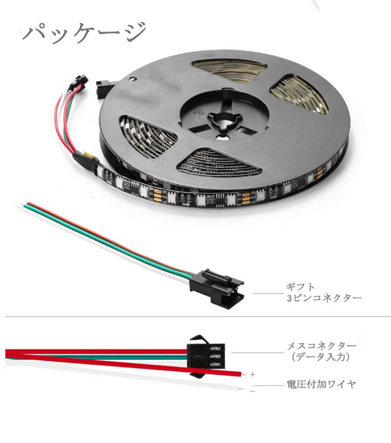
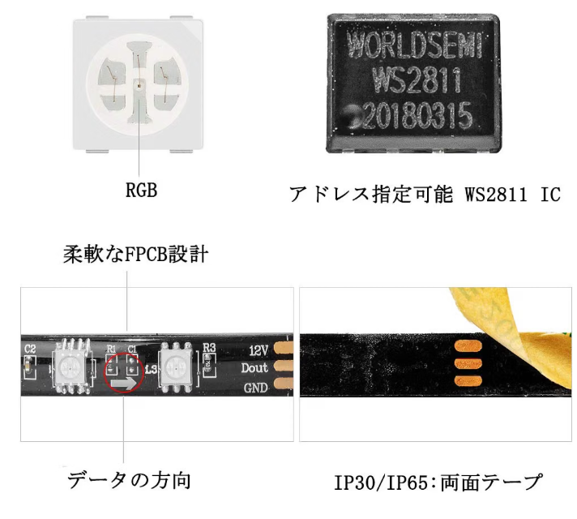
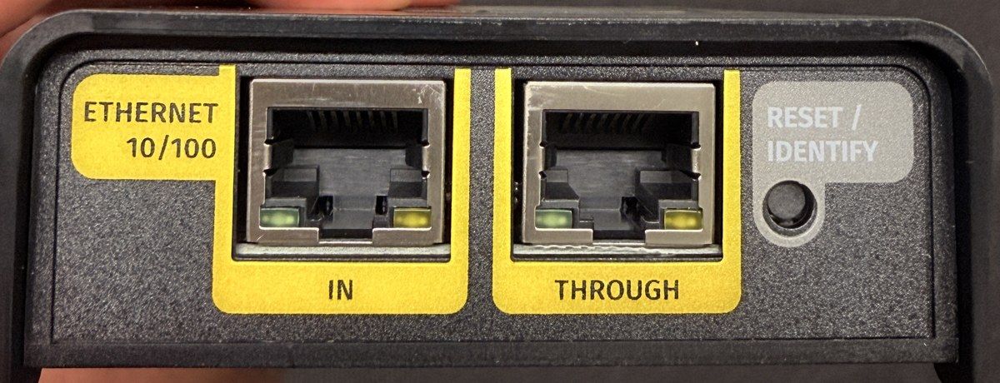
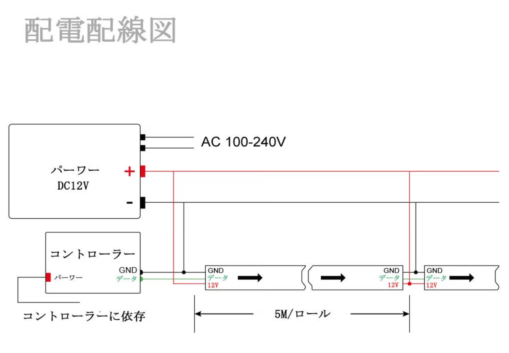

テープの入力側の端には、次の2つがすでに付いています。
| メスコネクター（データ入力） | 赤・緑・白の3本が入った黒いコネクター |
|---|---|
| 電圧付加ワイヤ | コネクターとは別の、赤（＋）と白（－）の2本。電源用です |
さらに、ギフトの3ピンコネクター（オス）が1個入っています。先が電線むき出しで、これを OCTO 側につなぎます。
BTF-LIGHTING WS2811 DC12V LEDテープ（5m・60LEDs/m）／ ENTTEC OCTO MK3 ／ 海渡電子 ACアダプター 12V 5A
テープ1本を組み立て、OCTO を設定し、TouchDesigner から点灯させる手順です。そのあと複数本へ広げます。
| 部品 | 数量 | 用途 |
|---|---|---|
| WS2811 LEDテープ 12V 5m | 5 | 1本 = 100ピクセル（ICチップ1個で LED 3個をまとめて制御、約5cm 単位） |
| ACアダプター 12V 5A（60W） | 5 | テープ1本に1個。付属の DCジャック プッシュ式コネクター（赤・黒のボタン付き）を使います |
| ENTTEC OCTO MK3 | 1 | テープに信号を送るコントローラー |
| 3ピン JST コネクター（オス・メス 10組） | 1 | 予備・延長用 |
| WAGO ワンタッチコネクター 5本用 | 2パック | －（GND）側をまとめる |
| JAPPY ワンタッチコネクター 3本用 | 2パック | ＋側をまとめる |
| スピーカーケーブル 16ゲージ 30.5m | 1 | 電源・GND の配線用 |
| 電源タップ 6個口 | 1 | ACアダプターをまとめて差す |
工具：ワイヤーストリッパー（またはニッパー）、精密マイナスドライバー、ビニールテープ

テープの入力側の端には、次の2つがすでに付いています。
| メスコネクター（データ入力） | 赤・緑・白の3本が入った黒いコネクター |
|---|---|
| 電圧付加ワイヤ | コネクターとは別の、赤（＋）と白（－）の2本。電源用です |
さらに、ギフトの3ピンコネクター（オス）が1個入っています。先が電線むき出しで、これを OCTO 側につなぎます。

データには向きがあります。テープ上の矢印（画像の「データの方向」）が、信号の流れる方向です。

| 端子 | 使い方 |
|---|---|
| POWER（左端の2極） | OCTO 本体の電源。左が －、右が ＋。DC 5〜60V に対応しています |
| ポート1（右の4極） | 左から V－・DATA・CLK・V＋。テープ1本目はここにつなぎます |
| ポート2（中央の4極） | ポート1と同じ並び。テープ1本だけのときは使いません |
WS2811 テープは信号線が1本なので、CLK は使いません。V＋ も使いません（テープの電源はアダプターから直接入れます）。緑のブロックは差し込み式で、手前に引くと外れます。外すと端子名が見やすくなります。

| ETHERNET IN | PC やネットワークにつなぐ LAN 端子。設定や TouchDesigner からの制御に使います |
|---|---|
| THROUGH | 次の機器へ LAN をつなぐ端子。今回は使いません |
| RESET / IDENTIFY | 今回は使いません。押したまま電源を入れると、ネットワーク設定が工場出荷時に戻ります |
| 線 | 片方の端 | もう片方の端 |
|---|---|---|
| 線A | DCジャックコネクターの ＋ | ＋側コネクター（3本用） |
| 線B | DCジャックコネクターの － | －側コネクター（5本用） |
| 線C | ＋側コネクター（3本用） | OCTO の POWER ＋（右） |
| 線D | －側コネクター（5本用） | OCTO の POWER －（左） |
どの線も同じスピーカーケーブルなので、見分けがつくように、＋に使う線A・線C はケーブルの印（線や文字）のある側、－に使う線B・線D は印のない側から取ると間違えにくくなります。両端にマスキングテープで「A」「B」などと書いておくのもおすすめです。

ワンタッチコネクターの使い方
同じコネクターに差した電線どうしは、すべてつながります。使わない差し込み口は空けたままでかまいません。
OCTO からテープまでのデータ線（ギフトコネクターの線）は、3m 以内にしてください。
OCTO は初期設定が WS2812B 用になっているので、最初に一度、このテープ（WS2811）に合わせて設定します。設定は OCTO 本体に保存されるので、次からは不要です。
OCTO は初期設定で DHCP ですが、ルーターがない環境では 192.168.0.10 になります。ルーターにつなぐ場合は、ルーターが割り当てた IP を使います。
開けないときは、ENTTEC の無料ソフト EMU を使うと、ネットワーク上の OCTO を探して設定画面を開けます。
| 場所 | 項目 | 設定値 |
|---|---|---|
| Settings → Pixel Mapping Options | Input Protocol | Art-Net（初期値のまま） |
| Settings → Output Settings（ポート1） | LED Protocol | WS2811 |
| Settings → Output Settings（ポート1） | Mapped Pixels | 100 |
| Settings → Output Settings（ポート1） | 開始ユニバース | 0 |
最後に Save を押します。保存しないと反映されません。
100ピクセル × RGB 3チャンネル = 300チャンネルなので、テープ1本は Art-Net のユニバース1つに収まります（1ユニバースは 512チャンネル、RGB で最大170ピクセル）。
PC と OCTO を 5章のとおりつないだまま、TouchDesigner で次の3つのオペレーターをつなぎます。
| オペレーター | パラメーター | 設定値 |
|---|---|---|
| Pattern CHOP | Length | 300（100ピクセル × RGB） |
| Math CHOP | Range タブ | From Range -1〜1 → To Range 0〜255 |
| DMX Out CHOP | Interface | Art-Net |
| Network Address | 192.168.0.10（OCTO の IP） | |
| Net／Subnet／Universe | 0／0／0（OCTO の開始ユニバース 0 に合わせる） | |
| Format | Packet Per Channel（1チャンネルの 300サンプルを DMX チャンネルとして送る） | |
| Rate | 44 以下 | |
| Active | オン |

図では、1本目の出力側のデータが2本目の入力側へつながり、つなぎ目ごとに電源から ＋／－ をもう一度供給しています。テープが長くなると電圧が下がり、先のほうが暗くなったり色が変わったりするのを防ぐためです。
今回はテープ1本ごとに 12V 5A のアダプターを1個使います。つなぎ方は次の2通りです。
テープ1本ずつ、3章の手順で組み立て、緑の線と白い線をそれぞれ OCTO の別の出力ポートの DATA と V－ につなぎます。配線が単純で、どこかが光らないときも原因を探しやすい方法です。
| 症状 | 対処 |
|---|---|
| OCTO のランプが点かない | OCTO の電源配線（線C・線D）と、DCジャックコネクターの差し込みを確認します。 |
| OCTO は点くが、テープが光らない |
① OCTO が入力側（矢印が始まる側）につながっているか確認します。 ② 緑の線がポート1の DATA（左から2番目）、白い線が V－（左端）に入っているか確認します。 ③ 5章の設定（WS2811・100ピクセル）が保存されているか確認します。 |
| 設定画面が開けない | PC の IP が 192.168.0.20／255.255.255.0 になっているか、LAN ケーブルが ETHERNET IN に差さっているか確認します。Wi-Fi をオフにすると通ることがあります。 |
| TouchDesigner から送っても光らない |
① DMX Out CHOP の Network Address が OCTO の IP、Net／Subnet／Universe が OCTO の開始ユニバースと同じか確認します。 ② Format が Packet Per Channel になっているか確認します。 ③ Windows のファイアウォールで TouchDesigner の通信が許可されているか確認します。 |
| 色が指定と違う | 故障ではありません。OCTO の設定画面で、色の並び順（RGB／GRB など）を変更します。 |
| 途中から先が光らない | 光らなくなった位置の直前で、データの線やつなぎ目が切れていないか確認します。 |
| 先のほうが暗い・色が変わる | 電圧不足です。つなぎ目で ＋／－ を供給し直すか、方法Aに切り替えます。 |
| 異常に熱い・焦げたにおい | すぐにコンセントを抜き、＋ と － の配線を確認してください。 |
VFX照明制作 ／ LEDテープ組立説明書 テープの画像と配電配線図は BTF-LIGHTING の販売ページより